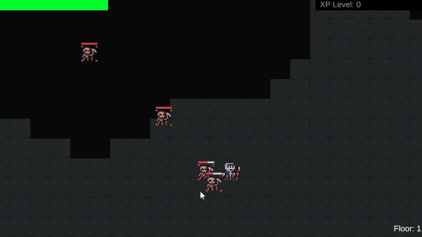
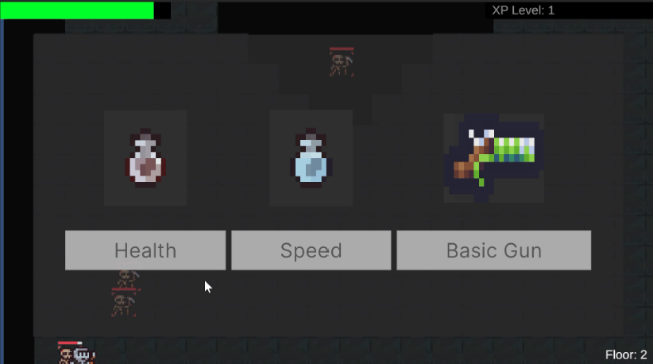
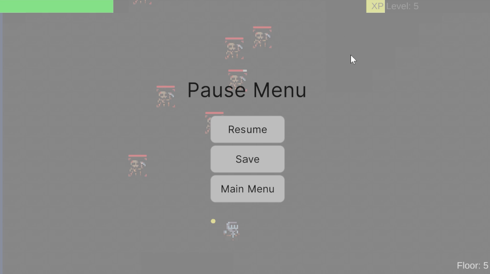
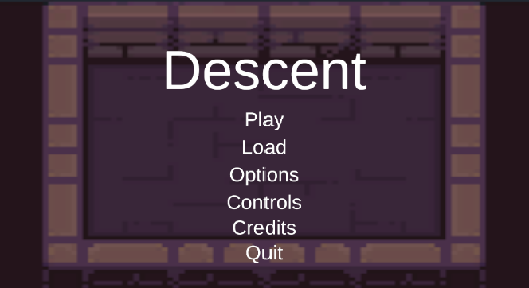
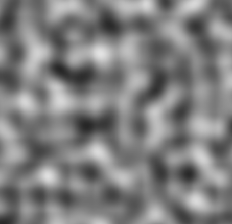
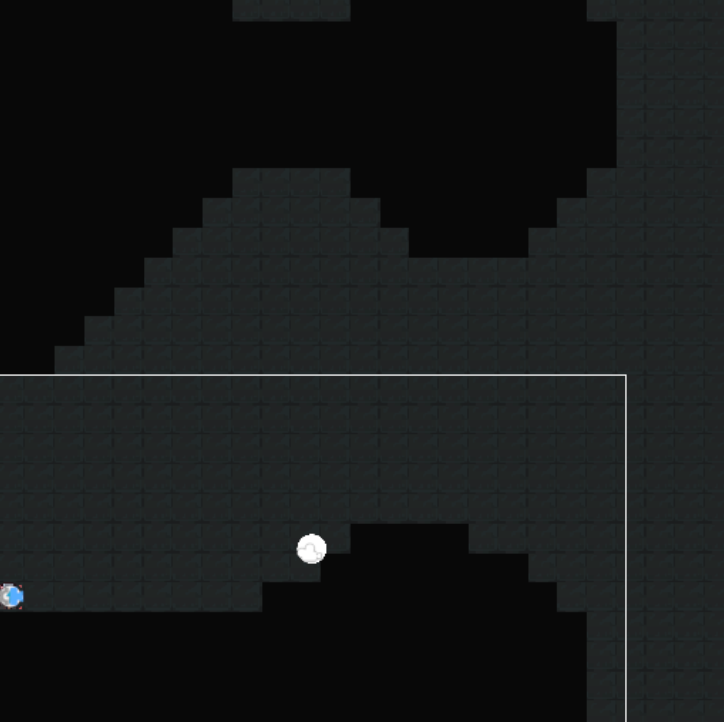
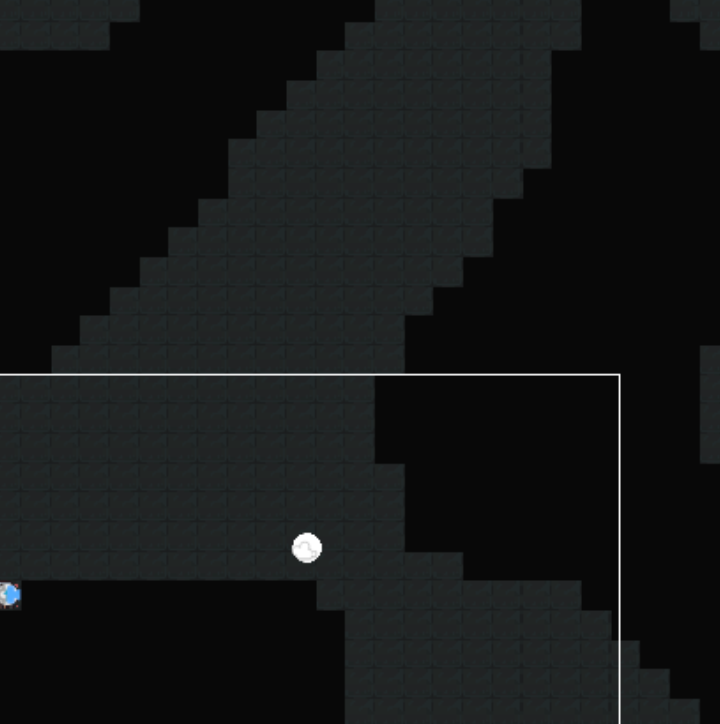
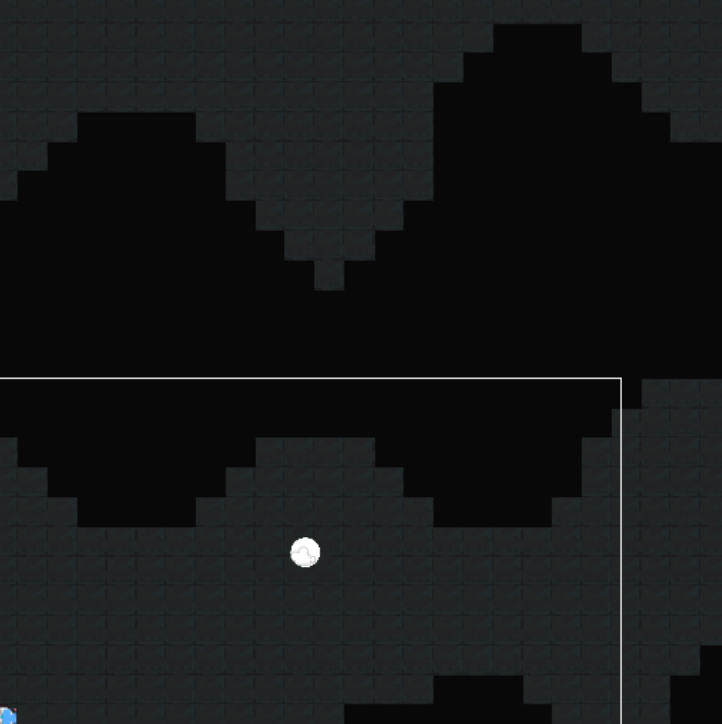

Senior ProjectSenior Project - Rouge Like Video Game

Descent is a video game where you shoot projectiles at enemies. It was created using Unity and C#. The player is moved to the next floor when all of the enemies on that floor are defeated. The player earns experience points from defeating enemies and when they get enough points they level up and get to pick a power up ability. The floors are randomly generated, so each time the games is played the floors will be different.

Main Menu

Pause Menu

Power Up Screen
The main menu is the first thing the player see when they start the application. They have the option play where it starts a new game. The load option loads the player’s previous save file. The player is able to pause the game with the escape button. The power up screen shows up when the player gains enough experience points to level up. The amount of points needed to level up increases a little each time. The power up screen randomly picks from the list of power up options and only displays three. The player is able to pick the one that they want.




Artists - Jules and Steve
Programers - Aly, Nithin, and Emily